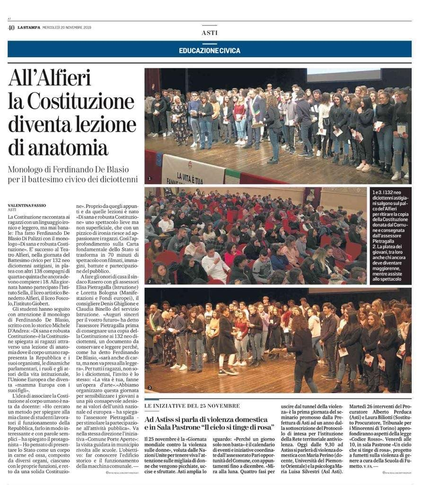

Il progetto
Dal 2018 nelle scuole italiane, con uno spettacolo e un libro che hanno lo stesso titolo, gli stessi autori e la stessa idea.
Come è nato
- 2018
Nasce la lezione-spettacolo. Ferdinando de Blasio di Palizzi e Michele D'Andrea scrivono il testo. In scena c'è un solo interprete, nei panni di un medico internista che fa il check-up allo Stato.
- 2019
A novembre lo spettacolo va in scena al Teatro Alfieri di Asti per il battesimo civico di 132 neo diciottenni, con le classi quarte e quinte di quattro istituti della città. La Stampa dedica all'evento un articolo intitolato «All'Alfieri la Costituzione diventa lezione di anatomia».
- Negli anni
Decine di repliche in tutta Italia, dal Piemonte alle Marche, dall'Umbria alla Toscana.
- Oggi
Il libro illustrato da Maurizio Dondi porta in classe gli stessi temi, con il testo integrale della Costituzione.
Come citarlo
Di sana e robusta Costituzione, di Michele D'Andrea e Ferdinando de Blasio di Palizzi, illustrazioni di Maurizio Dondi.
Gli autori
Illustrazioni del libro: Maurizio Dondi.


Rassegna stampa
«La Costituzione raccontata ai ragazzi con un linguaggio ironico e leggero, ma mai banale». Così La Stampa racconta la mattinata al Teatro Alfieri di Asti, dove lo spettacolo ha accompagnato la consegna della Costituzione a 132 neo diciottenni.
L'articolo riporta anche l'idea all'origine del progetto: trovare un metodo per spiegare la Costituzione con parole semplici, immaginando lo Stato come un corpo con i suoi organi.
Altre testimonianze
- La Nuova Provincia: Teatro Alfieri di Asti, i 20 anni del Servizio Civile
- Comune di Macerata: il 2 giugno, la Festa della Repubblica itinerante
- MCNET: Macerata, le celebrazioni per la Festa della Repubblica
- QuiNews Pisa: 400 studenti celebrano la Repubblica, a Cascina
- QuiNews Pisa: Studenti a lezione di anatomia costituzionale
- Istituto Comprensivo Borsellino: scheda didattica del progetto
Scrivici
Scrivici la data che hai in mente e di cosa dispone la scuola. Ti rispondiamo con disponibilità e requisiti tecnici.